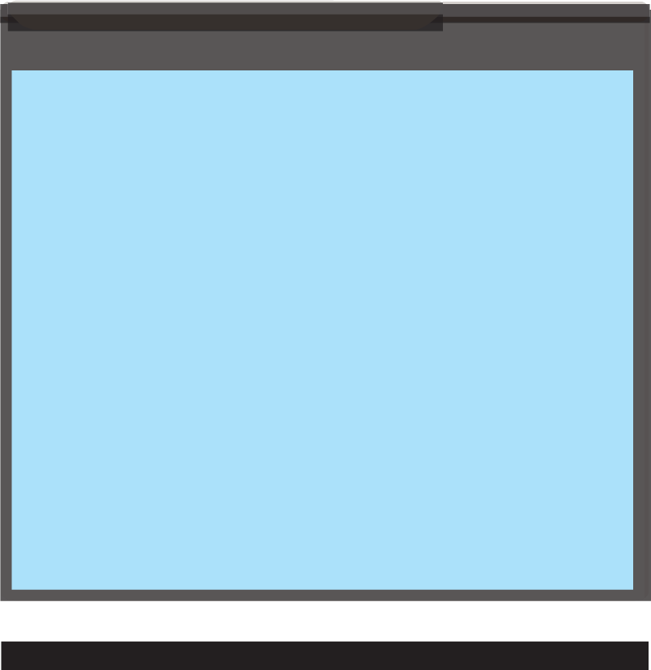

The source code for a function called max() is given below. This function takes
two parameters, num1 and num2, and returns the maximum value between the two.
#include <stdio.h>
/* Function that returns the maximum between two numbers */ int max(int num1, int num2)
{
/* Local variable declaration */ int result;
// Compare the two numbers and assign the greater one to ‘result’ if (num1 > num2) result = num1; // If num1 is greater, assign it to result else result = num2; // Otherwise, assign num2 to result return result; // Return the maximum value
} int main()
{
// Test the max function and print the result int a = 10, b = 20; int maximum = max(a, b); // Call the max function
// Output the result printf(“The maximum between %d and %d is %d\n”, a, b, maximum); return 0; // Exit the program
}
Program example 4.11:
Demonstration of do…while loop execution in C
Output:
The maximum between 10 and 20 is 20
Referring to this code, the function max() compares two integers and returns the larger
one. The condition checks if num1 is greater than num2. If true, num1 is assigned to the result; otherwise, num2 is assigned. The function then returns the result.
Function declaration
A function declaration informs the compiler about the function’s name and how to
call it, while the function body can be defined separately. A function declaration
consists of the following components:
return_type function_name(parameter list);
For the previously defined max() function, the function declaration would be:
int max(int num1, int num2);